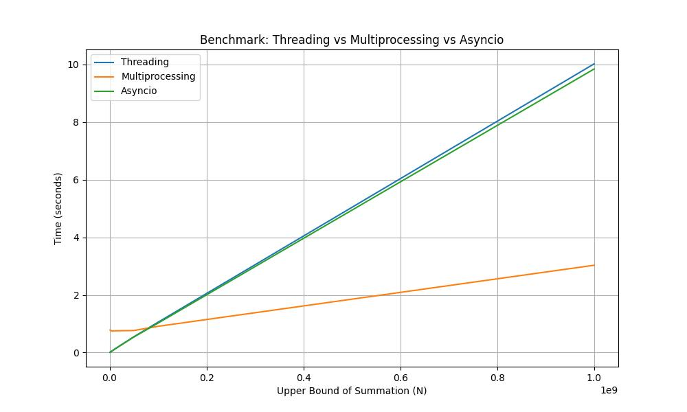
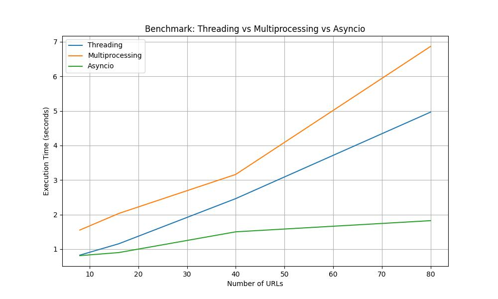

Документация к Лабораторной работе 2
Данная лабораторная работа посвящена изучению многопоточности, многопроцессорности и асинхронного программирования в Python. Исследуются различные подходы для повышения производительности вычислений и ввода-вывода за счет параллельного выполнения задач.
Общая информация
Лабораторная работа реализована с использованием трёх подходов:
- Threading – применение потоков для решения проблемы ввода-вывода и параллельного исполнения задач.
- Multiprocessing – использование процессов для разделения вычислительно тяжёлых задач.
- Asyncio – применение асинхронного программирования для повышения масштабируемости при выполнении задач ввода-вывода.
Целью работы является изучение особенностей и сравнительный анализ времени выполнения различных подходов на примерах двух задач: суммирования чисел и параллельного парсинга веб-страниц с сохранением данных в базу данных.
Задача 1: Суммирование чисел
Описание задачи 1
В данной задаче необходимо вычислить сумму чисел от 1 до N с использованием параллельного исполнения. Задача разбивается на несколько подзадач (частичных сумм), которые затем объединяются для получения окончательного результата. Использованы три подхода:
- Многопоточность (Threading)
- Многопроцессорность (Multiprocessing)
- Асинхронное программирование (Asyncio)
Реализация задачи 1
В папке task1 расположены реализации суммирования:
- threads.py – реализация с использованием потоков.
- processes.py – реализация с использованием процессов.
- async_impl.py – реализация с использованием asyncio.
Код запуска тестирования находится в файле main.py и benchmark.py.
Результаты тестирования задачи 1
Ниже представлен график времени выполнения для различных подходов:

Задача 2: Параллельный парсинг веб-страниц
Описание задачи 2
В задаче организован параллельный парсинг веб-страниц с сохранением извлечённых данных (заголовков страниц) в базу данных SQLite. Также реализованы три различных подхода:
- Парсинг с использованием потоков (Threading)
- Парсинг с использованием процессов (Multiprocessing)
- Парсинг с использованием асинхронного подхода (Asyncio)
В каждой реализации сайт запрашивается, HTML-страница анализируется с помощью BeautifulSoup, а затем извлекается заголовок страницы для сохранения в базу данных.
Реализация задачи 2
Используемые файлы:
- threads.py – реализация с использованием потоков.
- processes.py – реализация с использованием процессов.
- async_impl.py – реализация с использованием asyncio.
Основной файл для запуска задачи – main.py. Для сброса базы данных используется скрипт reset_db.py.
Результаты тестирования задачи 2
Ниже представлен график времени выполнения работы для различных подходов:

Выводы
- Threading:
Хорош для задач ввода-вывода, однако ограничен GIL при вычислительно тяжёлых операциях. - Multiprocessing:
Эффективен для вычислительно интенсивных задач за счёт использования независимых процессов, но имеет накладные расходы на создание и синхронизацию процессов. - Asyncio:
Наиболее эффективен для I/O-bound задач, что подтверждается результатами по скорости парсинга, но требует иного подхода к организации кода.
Практический вывод – выбор подхода зависит от характера задачи. При работе с большим количеством сетевых запросов или операций ввода-вывода предпочтителен asyncio, а для тяжёлых вычислений – multiprocessing.
Данная документация содержит описание заданий, примеры реализации с использованием существующих файлов, а также результаты тестирования, представленные в виде графиков. Для подробностей можно обратиться к исходным файлам в соответствующих директориях.